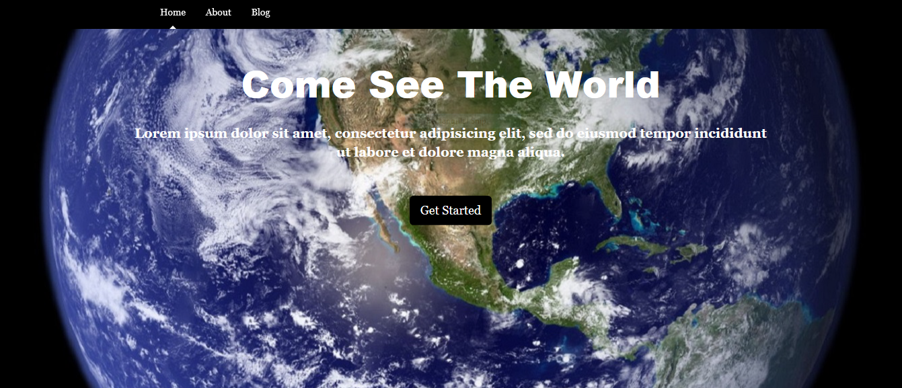
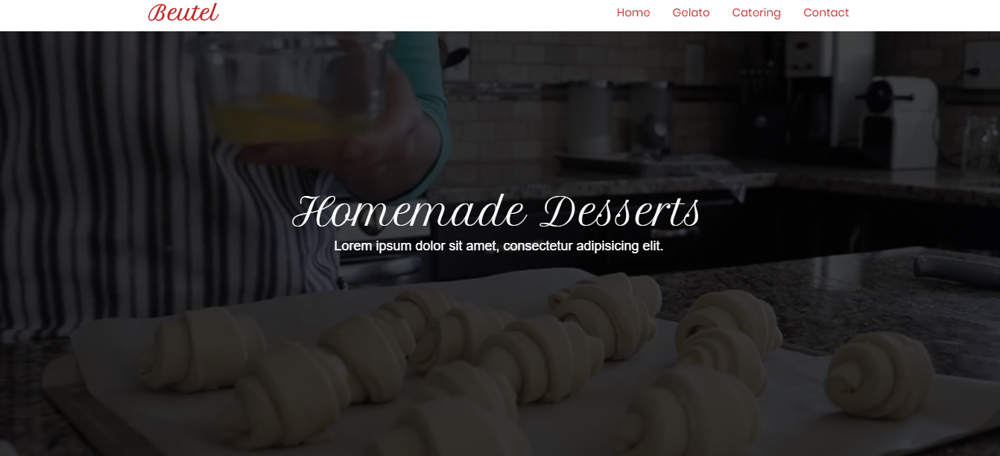
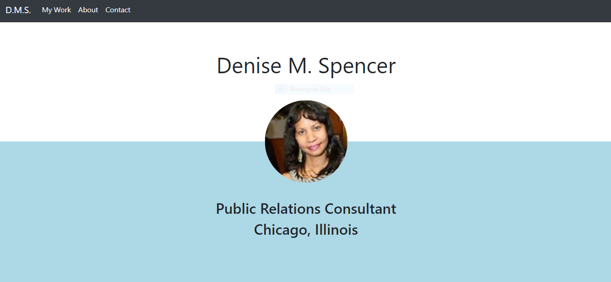
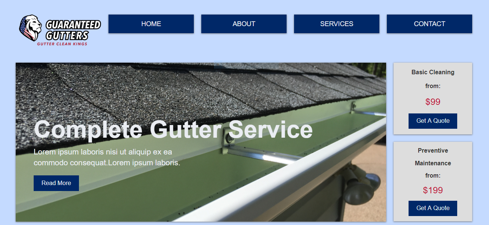

With Style & Grace is a full service hair & beauty salon located in Raritan New Jersey.
Created with: WordPress, Elegant Themes and Divi Page Builder. Customized using CSS3, Google Fonts and Font Awesome.
View WebsiteJames "Chris" Martin former Chicago Bear & Northwestern Wildcat turned NFL Agent is now President & CEO of On The Go Sports Management LLC.
Created with: WordPress, Elegant Themes and Divi Page Builder. Customized using CSS3, JavaScript and Google Fonts.
View WebsiteWordPress blog website. Click the "View Code" button below to view code on github or to download zip file and view site locally.
Created with: WordPress, customized using HTML5 , CSS3, Bootstrap, Font Awesome, Media Queries, and PHP.
View Code Tammy Beutel is a pastry chef with a love for all things sweet! Catering available for all occasion.
Created with: HTML5, CSS3, Bootstrap, Google Fonts and jQuery.
View Website View Code Denise M. Spencer is a Chicago-based public relations and engagement marketing professional with the heart and mind of a journalist.
Created with: HTML5, CSS3, Bootstrap, jQuery and SASS.
View Website View Code Owner operated Guaranteed Gutters, serving Chicago's northwest side has been keeping gutters clean and leak-free for more than 12 years.
Created with: HTML5, CSS3, CSS Grid, Flexbox, jQuery and Media Queries.
View Website View Code 